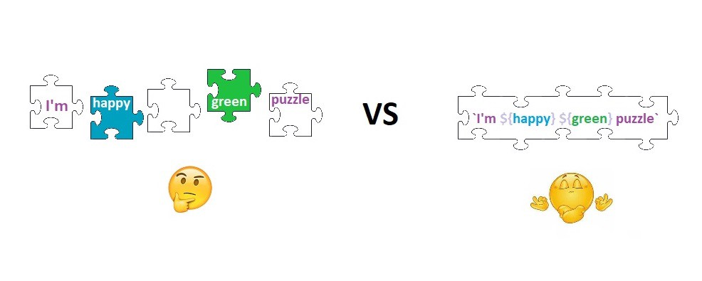
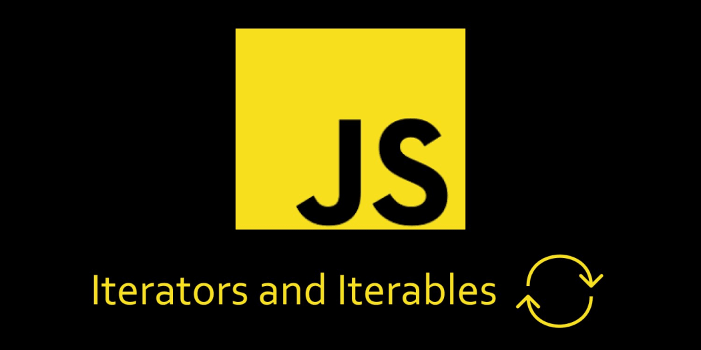
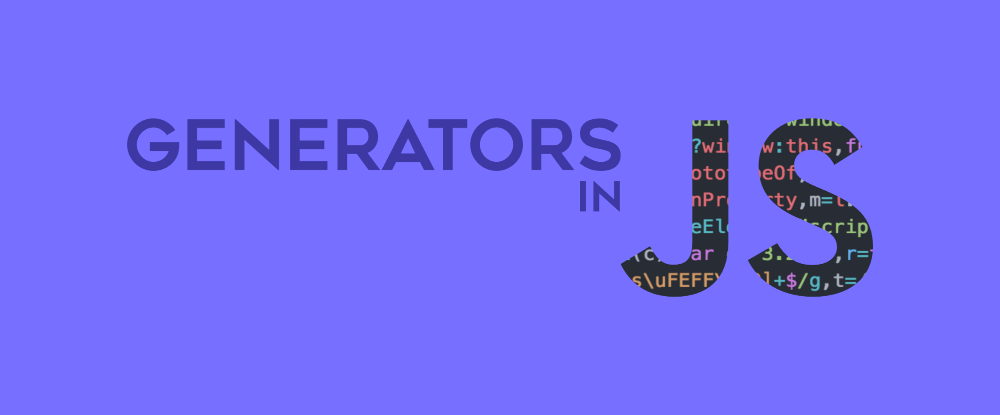
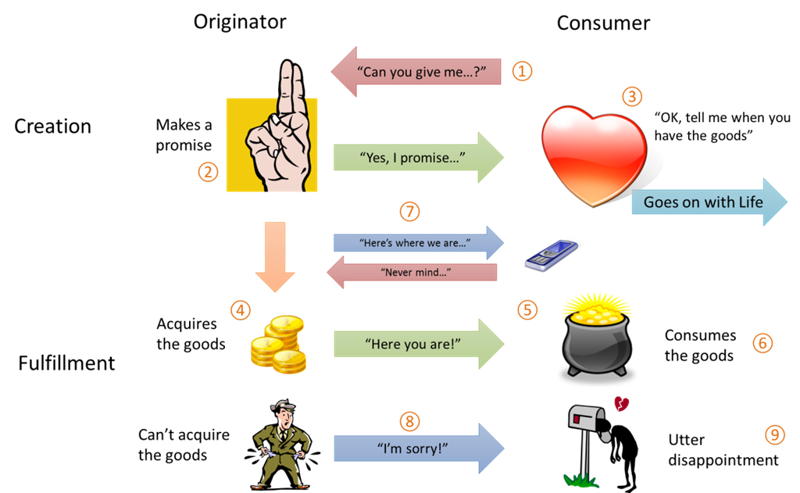

ECMAScript 6 — New Features: Overview & Comparison

1. let, const and block scoping

var a = 2;
{
let a = 3;
console.log(a); // 3
let a = 5; // TypeError: Identifier 'a' has already been declared
}
console.log(a); // 2
{
const b = 5;
b = 10; // TypeError: Assignment to constant variable
const arr = [5, 6];
arr.push(7);
console.log(arr); // [5,6,7]
arr = 10; // TypeError: Assignment to constant variable
arr[0] = 3; // value is mutable
console.log(arr); // [3,6,7]
}
- Hoisting of let and const vary from the traditional hoisting of variables and functions. Both let and const are hoisted, but cannot be accessed before their declaration
- let and const are scoped to the nearest enclosing block
- When using const with fixed strings or values, CAPITAL_CASING might be appropriate (ex: const PI = 3.14)
- const has to be defined with its declaration
- Always use const over let, unless you plan on re-assigning the variable.
2. Arrow Functions

// Classical Function Expression
function addition(a, b) {
return a + b;
};
// Implementation with arrow function
const addition = (a, b) => a + b;
// With single argument, no parentheses required
const add5 = a => 5 + a;
Behold! There is more...
Arrow functions don't just make the code shorter. They are closely related to this binding behavior.
In ECMAScript 3/5
function Person() {
var self = this;
self.age = 0;
setInterval(function growUp() {
// The callback refers to the `self` variable of which
// the value is the expected object.
self.age++;
}, 1000);
}
In ECMAScript 6
function Person() {
this.age = 0;
setInterval(() => {
this.age++;//`this` properly refers to the person object
}, 1000);
}
3. Default Function Parameters
ES6 allows you to set default parameters in function definitions. Here is a simple illustration.
let getFinalPrice = (price, tax = 0.7) => price + price * tax;
getFinalPrice(500); // 850
getFinalPrice(500, 0.2); //600
4. Spread / Rest Operator

... operator is referred to as spread or rest operator, depending on how and where it is used.
const arr1 = [1, 2, 3];
const arr2 = [7, 8, 9];
console.log([...arr1, 4, 5, 6, ...arr2]) // [1, 2, 3, 4, 5, 6, 7, 8, 9]
function foo(...args) {
console.log(args);
}
foo(1, 2, 3, 4, 5); // [1, 2, 3, 4, 5]
5. Object Literal Extensions
ES6 allows declaring object literals by providing shorthand syntax for initializing properties from variables and defining function methods. It also enables the ability to have computed property keys in an object literal definition.
function getCar(make, model, value) {
return {
// with property value shorthand
// syntax, you can omit the property
// value if key matches variable
// name
make, // same as make: make
model, // same as model: model
value, // same as value: value
// computed values now work with
// object literals
['make' + make]: true,
// Method definition shorthand syntax
// omits `function` keyword & colon
depreciate() {
this.value -= 2500;
}
};
}
let car = getCar('Kia', 'Sorento', 40000);
console.log(car);
// {
// make: 'Kia',
// model:'Sorento',
// value: 40000,
// makeKia: true,
// depreciate: function()
// }
6. Octal and Binary Literals
ES6 has new support for octal and binary literals
let oValue = 0o10;
console.log(oValue); // 8
let bValue = 0b10; // 0b or 0B for binary
console.log(bValue); // 2
foo(1, 2, 3, 4, 5); // [1, 2, 3, 4, 5]
7. Array and Object Destructuring
Destructuring helps in avoiding the need for temp variables when dealing with object and arrays.
function foo() {
return [1, 2, 3];
}
let arr = foo(); // [1,2,3]
let [a, b, c] = foo();
console.log(a, b, c); // 1 2 3
function getCar() {
return {
make: 'Tesla',
model: 'g95',
metadata: {
vin: '123abc',
miles: '12000'
}
};
}
const {make, model} = getCar();
console.log(make, model); // Tesla g95
const {make, metadata: {miles}} = getCar();
console.log(make, miles); // Tesla 12000
8. super in Objects
ES6 allows to use super method in (classless) objects with prototypes.
const parent = {
foo() {
console.log("Hello from the Parent");
}
}
const child = {
foo() {
super.foo();
console.log("Hello from the Child");
}
}
Object.setPrototypeOf(child, parent);
child.foo(); // Hello from the Parent
// Hello from the Child
9. Template Literal and Delimiters
ES6 introduces an easier way to add interpolations which are evaluated automatically.
let user = 'Kevin';
console.log(`Hi ${user}!`); // Hi Kevin!
- `${ ... }` is used for rendering the variables.
- ` Backtick is used as delimiter.
10. for...of vs for...in
for...of iterates over iterable objects, such as array.
const nicknames = ['di', 'boo', 'punkeye'];
nicknames.size = 3;
for (let nickname of nicknames) {
console.log(nickname);
}
// di
// boo
// punkeye
for...in iterates over all enumerable properties of an object.
const nicknames = ['di', 'boo', 'punkeye'];
nicknames.size = 3;
for (let nickname in nicknames) {
console.log(nickname);
}
// 0
// 1
// 2
// size
11. Map and WeakMap
ES6 introduces new set of data structures called Map and WeakMap
const myMap = new Map();
const keyString = "a string",
keyObj = {},
keyFunc = () => {};
// setting the values
myMap.set(keyString, "value associated with 'a string'");
myMap.set(keyObj, "value associated with keyObj");
myMap.set(keyFunc, "value associated with keyFunc");
myMap.size; // 3
// getting the values
myMap.get(keyString); // "value associated with 'a string'"
myMap.get(keyObj); // "value associated with keyObj"
myMap.get(keyFunc); // "value associated with keyFunc"
A WeakMap only has four methods delete(key), has(key), get(key) and set(key, value)
const w = new WeakMap();
w.set('a', 'b');
// Uncaught TypeError: Invalid value used as weak map key
const o1 = {},
o2 = () => {},
o3 = window;
w.set(o1, 37);
w.set(o2, "azerty");
w.set(o3, undefined);
w.get(o3); // undefined, because that is the set value
w.has(o1); // true
w.delete(o1);
w.has(o1); // false
12. Set and WeakSet
Set objects are collections of unique values
const mySet = new Set([1, 1, 2, 2, 3, 3]);
mySet.size; // 3
mySet.has(1); // true
mySet.add('strings');
mySet.add({ a: 1, b:2 });
Similar to WeakMap, the WeakSet object lets you store weakly held objects in a collection
const ws = new WeakSet();
const obj = {};
const foo = {};
ws.add(window);
ws.add(obj);
ws.has(window); // true
ws.has(foo); // false, foo has not been added to the set
ws.delete(window); // removes window from the set
ws.has(window); // false, window has been removed
13. Classes in ES6
ES6 introduces new class syntax
class Task {
constructor() {
console.log("task instantiated!");
}
showId() {
console.log(23);
}
static loadAll() {
console.log("Loading all tasks..");
}
}
console.log(typeof Task); // function
const task = new Task(); // "task instantiated!"
task.showId(); // 23
Task.loadAll(); // "Loading all tasks.."
extends and super in classes
class Car {
constructor() {
console.log("Creating a new car");
}
}
class Porsche extends Car {
constructor() {
super();
console.log("Creating Porsche");
}
}
let c = new Porsche();
// Creating a new car
// Creating Porsche
- Class declarations are not hoisted. You first need to declare your class and then access it, otherwise ReferenceError will be thrown
- There is no need to use function keyword when defining functions inside a class definition
14. Symbol
A Symbol is a unique and immutable data type introduced in ES6
const sym = Symbol("some optional description");
console.log(typeof sym); // symbol
To retrieve an object’s symbol properties, use Object.getOwnPropertySymbols
const o = {
val: 10,
[Symbol("random")]: "I'm a symbol",
};
console.log(Object.getOwnPropertyNames(o)); // val
15. Iterators
An iterator accesses the items from a collection one at a time, while keeping track of its current position within that sequence.
const arr = [11,12,13];
const itr = arr[Symbol.iterator]();
itr.next(); // { value: 11, done: false }
itr.next(); // { value: 12, done: false }
itr.next(); // { value: 13, done: false }
itr.next(); // { value: undefined, done: true }
16. Generators
A generator function returns an iterable object when it's called
function *infiniteNumbers() {
let n = 1;
while (true) {
yield n++;
}
}
const numbers = infiniteNumbers(); // returns an iterable object
numbers.next(); // { value: 1, done: false }
numbers.next(); // { value: 2, done: false }
numbers.next(); // { value: 3, done: false }
17. Promises
ES6 has native support for promises
The standard way to create a Promise is by using the new Promise() constructor which accepts a handler that is given two functions as parameters
const p = new Promise((resolve, reject) => {
if (/* condition */) {
resolve(/* value */); // fulfilled successfully
} else {
reject(/* reason */); // error, rejected
}
});
Every Promise has a method named then which takes a pair of callbacks
p.then((val) => console.log("Promise Resolved", val),
(err) => console.log("Promise Rejected", err));
Returning a value from then callbacks will pass the value to the next then callback.
const hello = new Promise((resolve, reject) => { resolve("Hello") });
hello.then((str) => `${str} World`)
.then((str) => `${str}!`)
.then((str) => console.log(str)) // Hello World!
When returning a promise, the resolved value of the promise will get passed to the next callback to effectively chain them together. This is a simple technique to avoid "callback hell".
const p = new Promise((resolve, reject) => { resolve(1) });
const eventuallyAdd1 = (val) => new Promise((resolve, reject) => { resolve(val + 1) });
p.then(eventuallyAdd1)
.then(eventuallyAdd1)
.then((val) => console.log(val)); // 3
Useful links:
learn.javascript.rues6-features.org
Yan Polyn github.com 2018